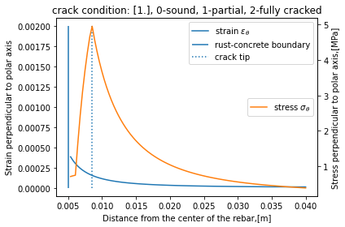
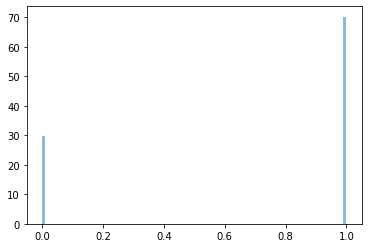
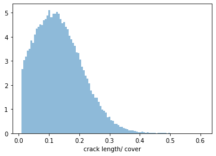

cracking model example
[7]:
%matplotlib inline
import math_helper as mh
from cracking import Cracking_Model
import matplotlib.pyplot as plt
import warnings
warnings.filterwarnings('ignore')
[11]:
# raw data
class Param: pass
raw_pars = Param()
# material properties
r0_bar_mean = 5e-3 # rebar diameter [m]
f_t_mean=5. # concrete ultimate tensile strength[MPa]
E_0_mean=32e3 # concrete modulus of elasticity [Mpa]
x_loss_mean = 12.5e-6*0.6 # rebar section loss, mean [m]
cover_mean = 4e-2 # cover thickness, mean [m]
raw_pars.r0_bar = mh.normal_custom(r0_bar_mean, 0.1*r0_bar_mean, non_negative=True)
raw_pars.x_loss = mh.normal_custom(x_loss_mean, 0.1*x_loss_mean, non_negative=True) # or from the corrosion model solution
raw_pars.cover = mh.normal_custom(cover_mean, 0.1*cover_mean, non_negative=True)
raw_pars.f_t = mh.normal_custom(f_t_mean, 0.1*f_t_mean, non_negative=True)
raw_pars.E_0 = mh.normal_custom(E_0_mean, 0.1*E_0_mean, non_negative=True)
raw_pars.w_c = mh.normal_custom(0.5, 0.1*0.6, non_negative=True)
raw_pars.r_v = mh.beta_custom(2.96, 2.96*0.05, 3.3, 2.6) # rust volumetric expansion rate 2.96 lower 2.6 upper: 3.3
[12]:
# initialize model
model_crack = Cracking_Model(raw_pars)
# run model in deterministic mode to check the stress and strain diagram
model_crack.run(stochastic=False, plot_deterministic_result = True)
deterministic

[10]:
# run model in stochastic mode
model_crack.run(stochastic=True)
model_crack.postproc()
print(model_crack.crack_visible_rate_count)
print(model_crack.R_c - model_crack.pars.r0_bar) #/ M.pars.cover
print(model_crack.pars.cover)
0.0
[0.00135289 nan nan ... 0.00879189 0.00375403 0.00510172]
[0.04290379 0.04372729 0.03387371 ... 0.03663915 0.04810321 0.04641713]
[35]:
plt.figure()
mh.hist_custom(model_crack.crack_condition)
<Figure size 432x288 with 0 Axes>

[36]:
# histgram of the relative crack length though the cover
mh.hist_custom(model_crack.crack_length_over_cover[model_crack.crack_length_over_cover != 0]) # eliminate the uncracked case
plt.xlabel('crack length/ cover')
[36]:
Text(0.5, 0, 'crack length/ cover')

[ ]: